A box is a quiet object. The feed should feel like the room it lives in: north light, a worn bench, walnut and stone, one brass detail, nothing shouting.
Twelve references made for this board, one per situation the brand photographs. Below them: the palette, the light, the surfaces, the people whose work to look at, and the things the feed stops doing. Nothing here is from the existing grid.
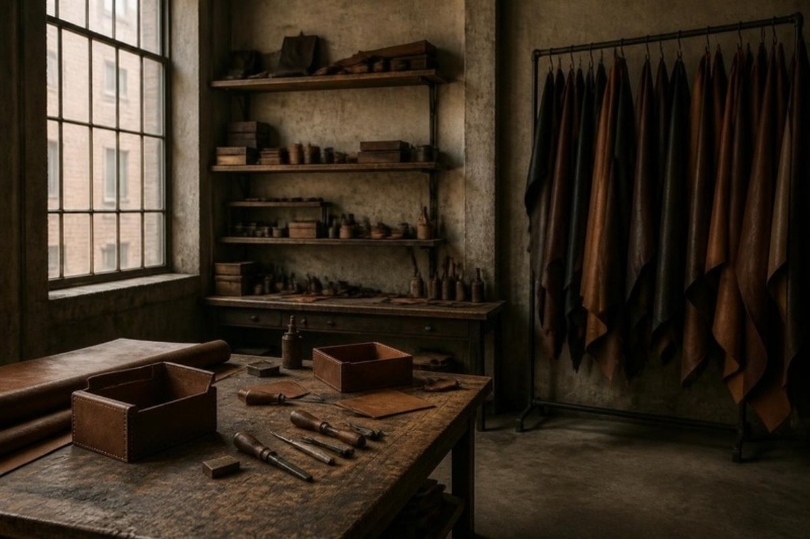
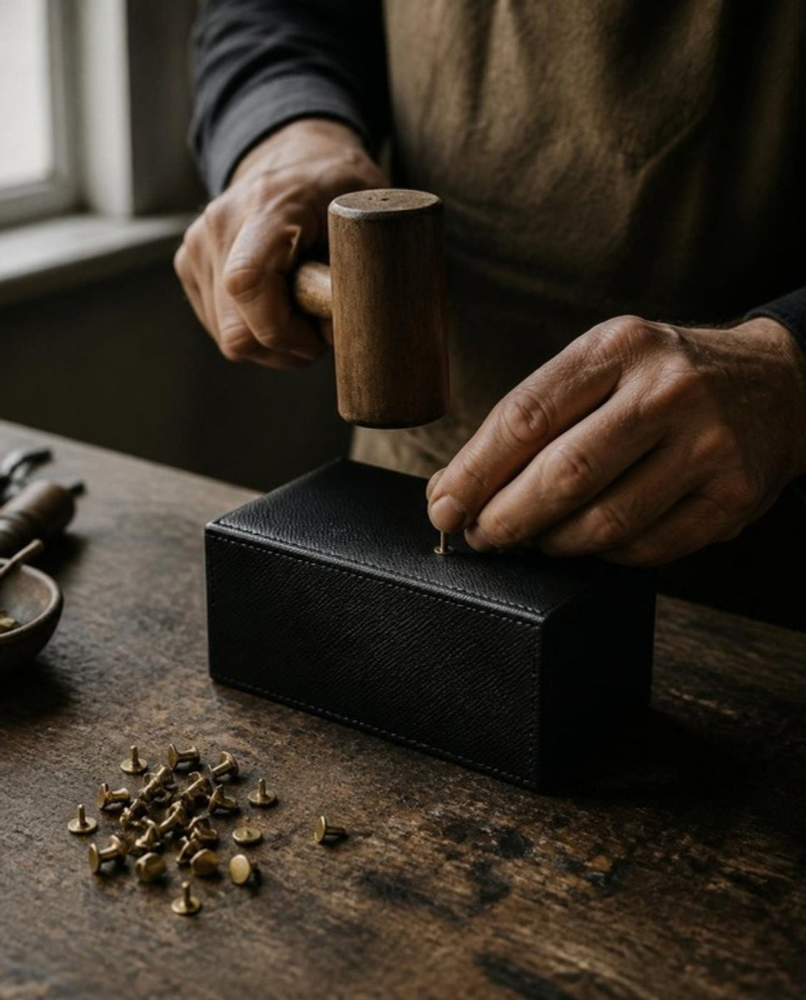
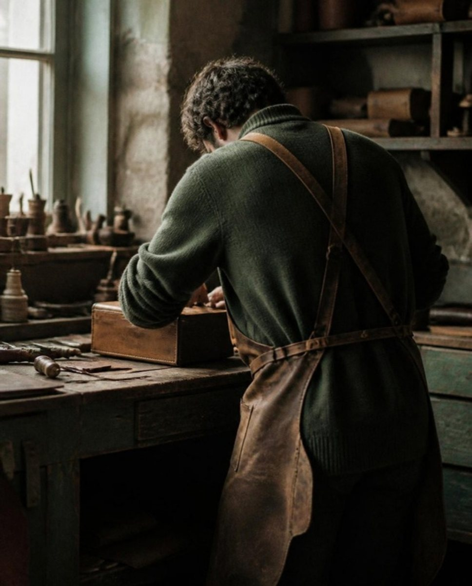
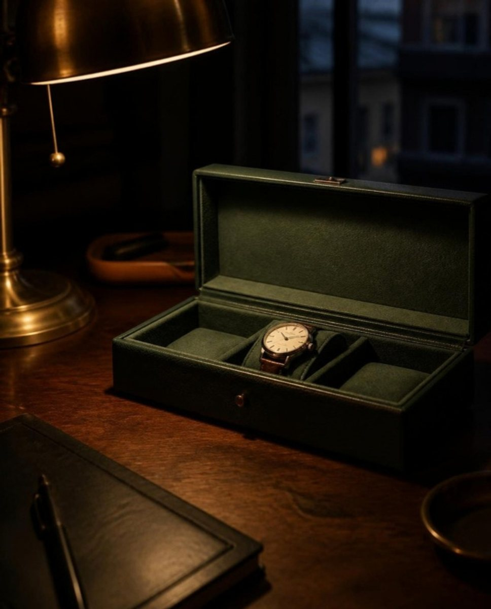
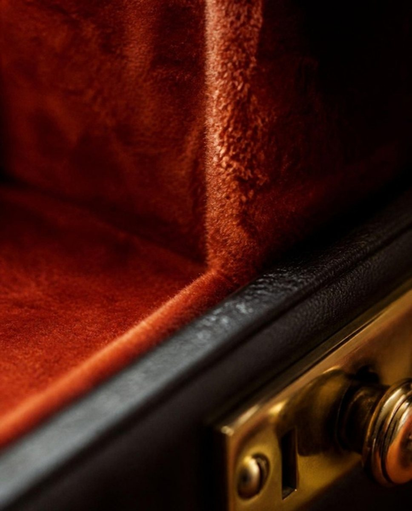
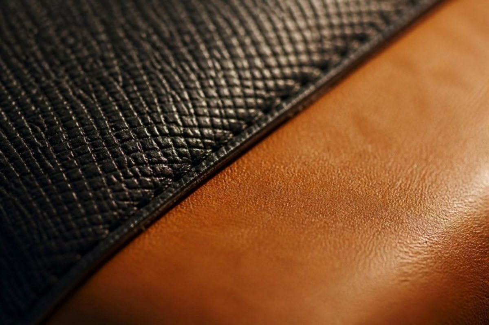
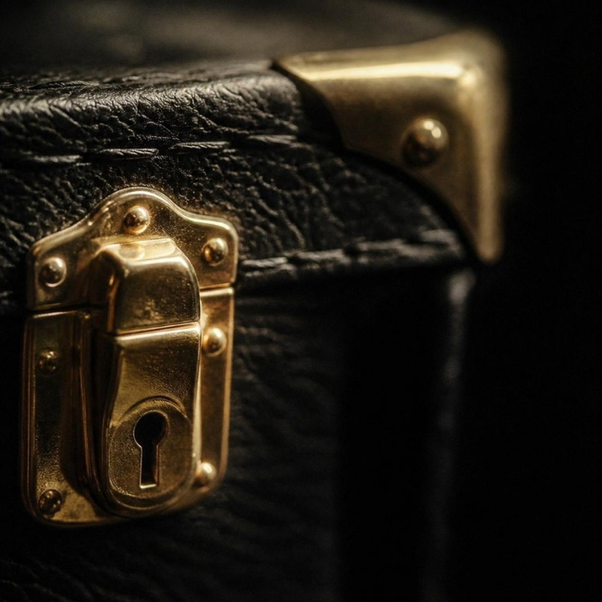
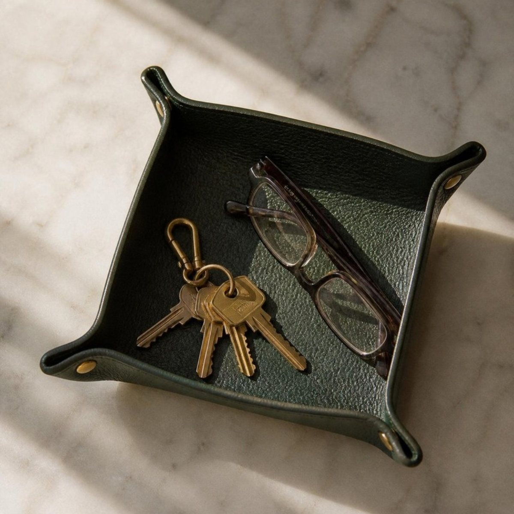
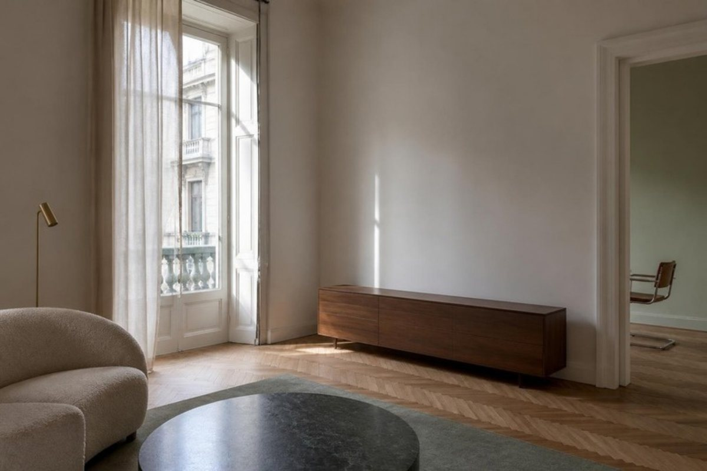
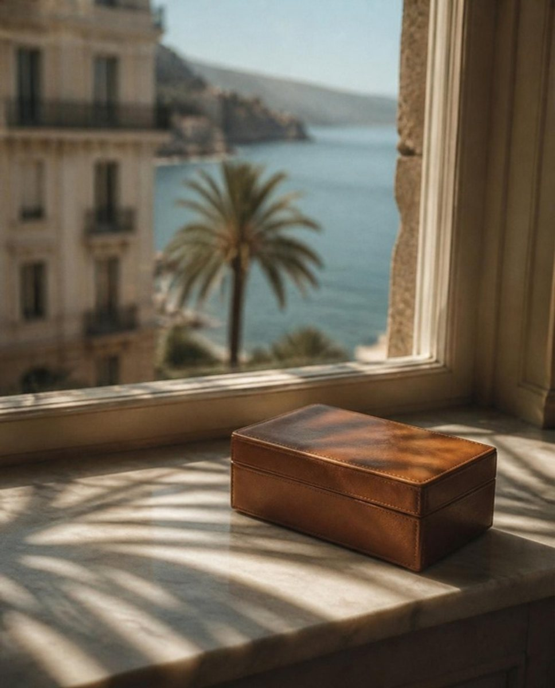
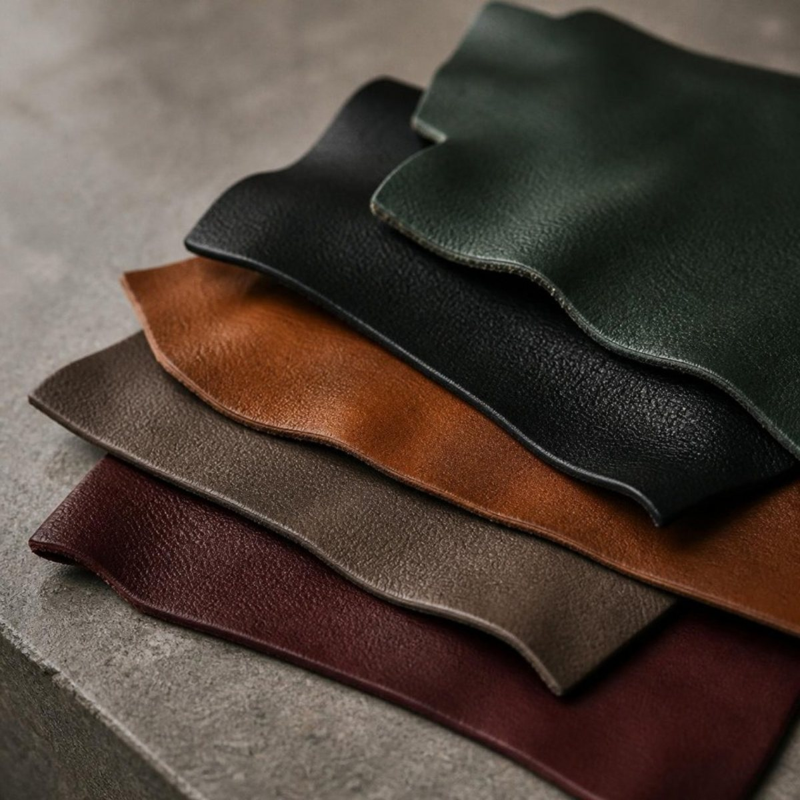
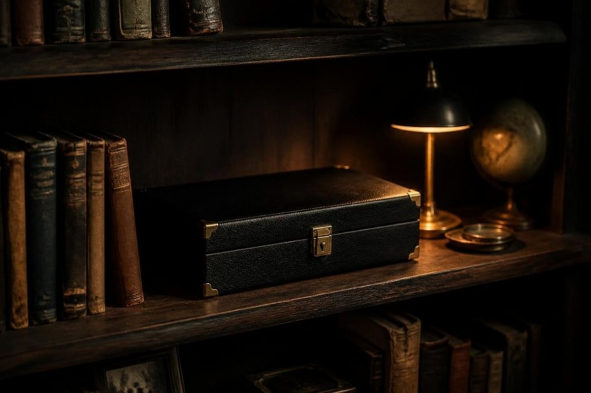
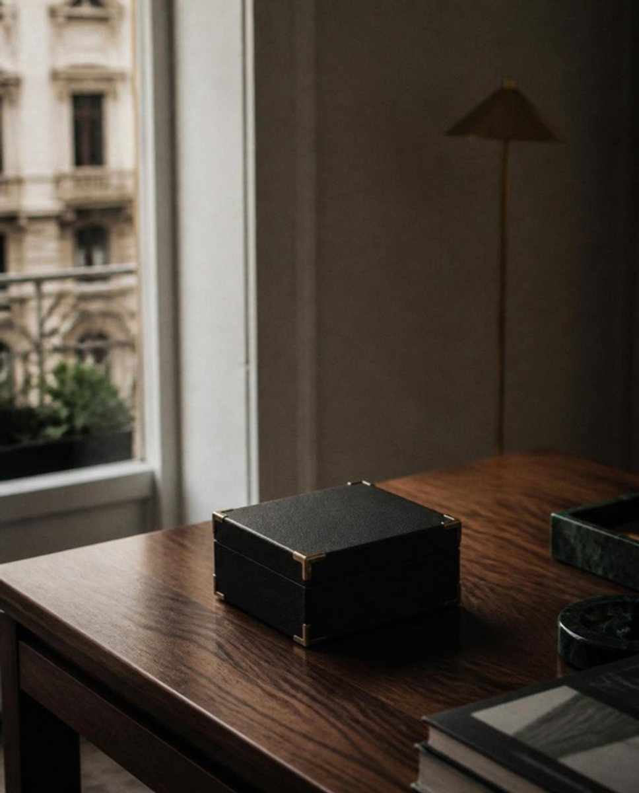
#17181A#274038#8B5A2B#B8411E#B08D57#C9C1B4#F7F5F1Daytime and process. One large soft source, falloff to the right, a white card to lift the shadow side. Rotate the box until the hot spot walks off the lid.
Material and hardware. Low and hard, almost parallel to the surface, so grain and cross-hatch cast their own shadows. The only time contrast goes up.
In use. A single warm pool, everything else falls to black. Tungsten, not LED white. The watch comes off the wrist here.
Desks, consoles, the evening frame. Oiled, not glossy. Grain visible, never reflective.
Sills, bathroom shelves, the tray's home. Pale, veined, cool against cognac leather.
Scarred wood, tools in frame. The only surface that is allowed to be messy, because the mess is the proof.
Hands and tools, no voiceover, no music under the sound of the work. The house that proved process content sells at any price.
How a luxury house photographs craft objects: single object, plain ground, light that explains the material. Study the catalogue photography.
Trunks and boxes with almost no social presence and no e-commerce. Restraint as the whole strategy. Note what they refuse to show.
The closest product cousin. Watch how they shoot corners, locks and leather trim, and how the workshop sits in the feed.
The Milanese interior the brand belongs in: walnut, marble, brass, parchment, restraint. Book a visit and shoot nothing. Just look.
Wes Anderson's Milanese café: Formica, veneer, pastel. Proof that a Milan reference can be warm without being nostalgic.
Long exposures, soft light, grain. The reference for the Evening frames and for what film grain is for.
How a Milanese room is photographed now: daylight, true colour, no styling tricks. The Room and Riviera frames follow him.
The leather bench as pure sound and motion. No talking, no music, cutting and stitching at a million likes a clip.
How a small watch-accessory brand enters the collector community: founder as collector, named tanneries, hours per piece, collaborations earned not bought.
The twelve images on this board were generated as references for the brief, one per situation. They are for looking at, not for posting: the real frames are shot at the bench, with the real boxes, under the light described above.